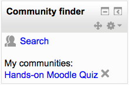

Community finder block¶
The community finder block enables users to access public community hubs, such as Moodle.net, and search for courses to download or enrol in.

- Downloadable courses may be immediately restored to your Moodle site
- Links to enrollable courses are saved in the community finder block

Downloading courses from a hub¶
- In the community finder block click Search
- Select a hub, such as Moodle.net
- Select ‘Courses I can download’ and then click the Search button
- For any courses of interest, click ‘Visit demo’ then if you’re happy with the course, click ‘Download’
- The course backup will then be downloaded and saved in your private files. Click Yes to immediately restore the course
Finding courses to enrol in¶
- In the community finder block click Search
- Select a hub, such as Moodle.net
- Select ‘Courses I can enrol in’ and then click the Search button
- For any courses of interest, click ‘Visit site’ then if you’re happy with the course, click ‘Save a link to this course’
The link to the course will then be displayed in the community finder block.
If you wish to remove any saved links, click the X icon after the link.
Capabilities¶
By default, users with the role of manager or teacher can use the community finder block.
The following capabilities control access to the block:
- moodle/community:add - allows a user to use the Community block to search for courses on a hub
- moodle/community:download - allows a user to use the Community block to download courses from a hub